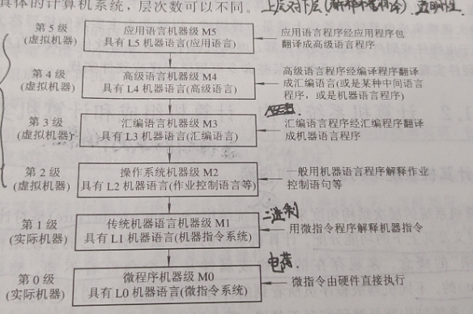

题目:
指令操作码的优化
{理论最短码}
[流水处理机一道题]
第一章 计算机系统结构基础及并发性的开发
1.1 计算机系统的层次结构
其中，0级和1级为硬件，2-5为软件
上层对下层进行解释和翻译，具有透明性。
翻译技术是先用转换程序将高一级机器级上的程序整个地变换成低一级机器级上等效的程序，然后再在低一级机器级上实现的技术。
翻译技术则是在低级机器级上用它的一串语句或指令来仿真高级机器级上的一条语句或指令的功能，是通过对高级的机器级语言程序中的每条语句或指令逐条解释来实现的技术。
1.2 计算机系统结构、计算机组成和计算机实现
1.2.1 计算机系统结构的定义和内涵
系统结构是对计算机系统中各级界面的定义及其上下的功能分配
内涵：确定计算机软硬件的界面。
计算机系统结构也称计算机系统的体系结构，它只是系统结构中的一部分，指的是传统机器级的系统结构。
结论：计算机系统结构研究的是软、硬件之间的功能分配以及对传统机器级界面的确定，为机器语言、汇编语言程序设计者或编译程序生成系统提供使其设计或生成的程序能在机器上正确运行而应看到和遵循的计算机属性。
1.2.2 计算机组成和计算机实现的定义及内涵
计算机组成指的是计算机系统结构的逻辑实现，包括机器级内部的数据流和控制流的组成以及逻辑设计等。（器件设计）
计算机实现的设计着眼于器件技术和微组装技术，其中，器件技术起着主导作用。
1.3 计算机系统的软、硬件取舍和性能评测及定量设计原理
1.3.1 软、硬件取舍的基本原则
软、硬件的功能分配是计算机系统结构的主要任务，而软件和硬件在逻辑功能上又是等效的。
原则1： 应考虑在现有硬件、器件（主要是逻辑器件和存储器件）条件下，系统要有高的性能价格，主要从实现费用、速度和其他性能要求来综合考虑。
设计费用：D硬件≈100D软件
重复生产费用： M硬件≈100M软件
结论：只有对产量大的计算机系统，增大硬件功能实现的比例才是适宜的。如果用硬件实现不能给用户带来明显的好处，产量仍较低，则系统是不会有生命力的。
原则2：要考虑准备采用和可能采用的组成技术，使之尽可能不要过多或不合理地限制各种组成、实现技术的采用。
原则3：不能仅从“硬”的角度考虑如何便于应用组成技术的成果和便于发挥器件技术的进展，还应从“软”的角度把如何为编译和操作系统的实现以及如何为高级语言程序的设计提供更多，更好的硬件支持放在首位。
1.3.2 计算机系统性能评测及定量设计原理
性能评测
$$
T_cpu= IC × CPI × \frac{1}{f_c}
$$
IC 总指令条数，平均每条指令的时钟周期数 CPI、主时钟频率 fc
MIPS(百万条指令数每秒)、MFLOPS（百万次浮点运算每秒）
计算机系统的定量设计原理
哈夫曼压缩原理，尽可能加速处理高频率时间远比加速处理概率低的事件对性能的提高要显著。
Amdahl定律。该定律是1967年IBM公司的Amdahl在设计IBM360 系列机时首先提出来的。该定律可用于确定对系统中性能瓶颈部件采取措施提高速度后能得到系统性能改进的成都，即系统加速比$S_p$。系统加速比$S_p$定义为系统改进后的性能与未改进时的性能的比值，或者定义为系统未改进时的程序执行时间$T_old$与改进后程序执行时间 $T_new$的比值。系统加速比$S_p$与两个因素有关，即性能可改进比$f_new$和系统加速比$r_new$
1.3.3 计算机系统设计的主要方法和任务
计算机系统设计的主要任务
(1) 要弄清其应用领域是专用的还是通用的。
(2) 要弄清软件兼容是放在哪级层次。
(3) 要弄清对操作系统有何种要求。
(4) 要如何保证有高的标准化程度。
计算机系统的设计方法
“由上往下[软件决定硬件]”、“由下往上[硬件决定软件]”、“由中间开始[软硬件结合]”
1.4 软件界、应用、器件的发展对系统结构的影响
1.4.1 软件的发展对系统结构的影响
1. 统一高级语言
(1) 不同的用途要求语言的语法、语义结构不同
(2) 人们对语言的基本结构看法不一
(3) 即使同一种高级语言在不同厂家的机器上也不能完全通用
3. 模拟和仿真
仿真是用微程序解释，其解释程序存在于控制存储器中；而模拟是用机器语言程序解释，其解释程序存在于主存中。
1.5 系统结构中的并发性开发及计算机系统的分类
1.5.1 并行性的概念和开发。
并行性包含同时性和并发性二重含义。同时性指两个或多个事件在同一时刻发生。并发性指两个或多个事件在同一事件间隔内发生。
开发并行性的途径有时间重叠、资源重复和资源共享等。
1.5.2 计算机系统的分类
计算机系统分为：单指令流单数据流、单指令流多数据流、多指令流单数据流和多指令流多数据流。
题目
什么是透明性概念？对于计算机系统结构，下列哪些是透明的？哪些是不透明的？
客观存在的事物或属性，从某个角度去看，却看不到，称这些事物和属性对它是透明的。透明了就可以简化这部分的设计，然而因为透明而无法控制和干预，就会带来不利。因此，透明性的取舍要正确选择。
对计算机系统结构透明的有：存储器的模 m 交叉存取，数据总线宽度，阵列运算部件，通道是采用结合型还是独立型，PDP-11系列的单总线结构，串行、重叠还是流水控制方式，Cache存储器。
不透明的有：浮点数据表示，I/O系统是采用通道方式还是外围处理机方式，字符行运算指令，访问方式保护，程序性中断，堆栈指令，存储器最小编制单位。
第二章 数据表示、寻址方式与指令系统
2.1 数据表示
数据表示(静态)[硬件]、数据结构（动态）[软件]
数据表示指的是能由机器硬件识别和引用的数据类型，表现在它有对这种类型的数据进行操作的指令和运算部件。
2.1.2 高级数据表示
标识符(1对1)和数据描述符(1对多)
向量(向量处理机)、数组数据表示(流水)
堆栈数据表示(先进后出，后进先出):层层叠放
嵌套调用：常用于树型结构，二叉树
2.1.3 引入数据表示的原则
原则1：看系统的效率是否显著提高，包括实现时间和存储空间是否有显著减少
原则2：看引入这种数据表示后，其通用性和利用率是否提高。
2.1.4 浮点数尾数基值大小和下溢处理方法的选择
用浮点数表示实数比用定点数表示有更大的可表示数范围。
浮点数尾数的下溢处理方法
截断法、舍入法、恒置”1”法、查表舍入法
2.2 寻址方式
寻址方式的三种面向
寄存器-寄存器(RR)、寄存器-存储器(RM)、存储器-存储器(MM)
2.3 指令系统的设计和优化
指令操作码的优化
指令是由操作码和地址码两部分组成的。
$$
信息冗余度 = \frac{实际平均码长-H}{实际平均码长}
$$
理论最短码
$$
H = ∑P_ilog_2Pi
$$
第三章 存储、中断、总线与输入/输出系统
3.1 存储系统的基本要求和并行主存系统
Cache-主存(速度)、主存-辅存(容量)
3.1.2 并行主存系统
分布式交叉存储
中断系统
中断可分为内部中断、外部中断和软件中断三类。
内部中断(自陷、故障、终止)
外部中断（时钟中断和I/O中断）
内中断优于外中断
3.3 总线系统
3.3.1 总线的分类
总线按用法可分为专用和非专用两类
3.3.3 总线的通信技术
同步通信和异步通信
第四章 存储体系
4.1 基本概念
存储系统的构成依据：
预知的可能性基于计算机程序具有局部性，它包括时间上的局部性和空间上的局部性。
4.1.3 存储体系的性能参数
SMi为Mi的以位计算的存储容量，ci为Mi的每位价格
存储层次的每位价格为
$$
c = \frac{c_1S_M1+c_2S_M2}{S_M1+S_M2}
$$
命中率 H=R1/(R1+R2)
等效访问时间$T_A = HT_A1+(1-H)T_A2$
设CPU对存储层次相邻二级的访问时间比 $r=T_A2/T_A1$
4.2 虚拟存储器
4.2.1 虚拟存储器的管理方式
1.段式管理
功能：用户给出一个地址(虚地址或逻辑地址)虚拟地址存储要给出该地址对应的数址。
实现：由辅助硬件将虚地址映射到主存中的某个单元，主存地址称为实地址
特征：离散性、多次性、对换性、虚拟性
4.3 高速缓存存储器
高速缓存存储器(RAM(SRAM[静态]、DRAM[主存])、ROM)
4.3.2 地址的映像与变换
映射关系分为:
全相联(随意放):3+6+19-> 随意(RAND){块号+块内地址+有效码}
直接映射(对号入座): 有效位+19（主存内地址）{标记号+主存内地址+块号}
组相联（组内随意，组外对号入座）:组地址+3+6 {组标记+块号+块内地址}
先进先出(FIFO)、近期最少使用(IRU)、最近不常使用(LFU)
4.3.3 Cache存储器的LRU替换算法的硬件实现
替换策略:
随机算法:针对全相联，易实现且命中率低
先进先出算法[队列]：选择最早调入的行替换，精度低
计数器[堆栈] (命中):
近期最少使用的算法 LRU
最不常使用的算法: LFU
4.3.4 Cache存储器的透明性及性能分析
Cache写策略
Cache写策略分为命中和不命中两种情况，命中有写回法和全写法，不命中则有非分配写法和分配写法
4.4 三级存储体系
虚拟存储器(叶式、段式、分页式)
第五章 标量处理器
流水处理
5.2.1 流水方式
流水的分类
浮点加可进一步细分成“求阶差”、“对阶”、“尾数相加”、“规格化”4个子过程
把一个任务分为多个/若干个子任务
按处理级别分为：部件级、处理机级和系统级
按功能的多少分为：单功能流水线和多功能流水线
按连接方式分为：静态流水线和动态流水线。
按流水线处理机分为：标量流水机和向量流水机
是否有反馈回路分为：线性流水和非线性流水
顺序流水线和乱序流水线
5.2.2 标量流水线的主要性能
标量流水线的性能主要是吞吐率$T_p$、加速比$S_p$和效率$\eta$
1.吞吐率$T_p$和加速比$S_p$
吞吐率的计算公式
$$
T_p = \frac{n}{T_k}
$$
n: 任务数
Tk: 处理完n个任务所需时间
加速比的计算公式
$$
S_p = \frac{T_0}{T_k}
$$
最大吞吐率$T_pmax$为1/$\Delta t_2$
实际吞吐率:$T_p=\frac{n}{(k+n-1)\Delta t}$
$e=\frac{n}{kT_k}$
$S=\frac{T_0}{T_k}=\frac{nk\Delta t}{k\Delta t+(n-1)\Delta t}$
第六章 向量处理机
6.1 向量的流水处理和向量流水处理机
6.1.2 向量流水处理机的结构举例
“存储器”-“存储器”结构(并行)
“寄存器”-“寄存器”结构(并行)
不同之处：容量不同